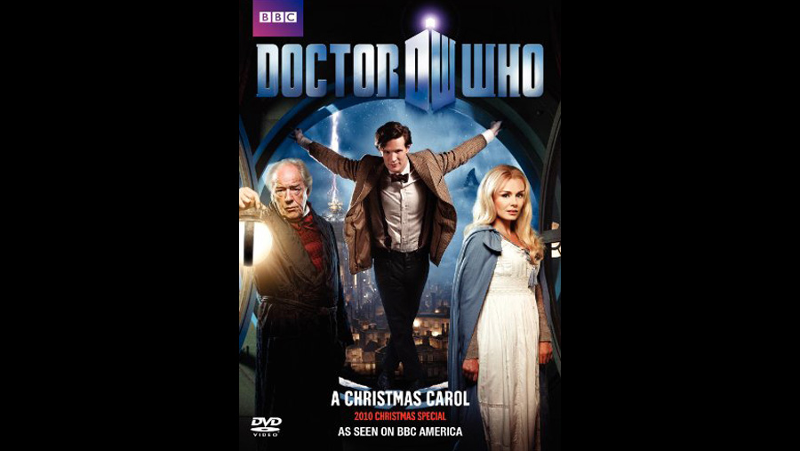

| Character | Actor |
|---|---|
| Kazran / Elliot Sardick (Ebenezer Scrooge) | Michael Gambon |
| Doctor Who | Matt Smith |
| Karen Gillan | Amy Pond |
| Arthur Darvill | Rory Williams |
| Abigail | Katherine Jenkins |
| Young Kazran | Laurence Belcher |
| Adult Kazran | Danny Horn |
| Pilot | Leo Bill |
| Captain | Pooky Quesnel |
| Co-pilot | Micah Balfour |
| Old Benjamin | Steve North |
| Boy & Benjamin | Bailey Pepper |
| Servant | Tim Plester |
| Isabella | Laura Rogers |
| Old Isabella | Meg Wynn-Owen |
| Role | Person |
|---|---|
| Director | Toby Haynes |
| Screenplay | Steven Moffat |
In the episode, newly wedded companions Amy Pond (Karen Gillan) and Rory Williams (Arthur Darvill) are trapped on a crashing space liner which has been caught in a strange cloud belt. They call the Doctor (Matt Smith), who lands on the planet below and meets the miserly Kazran Sardick (Michael Gambon), a man who can control the cloud layer but refuses to help. Inspired by A Christmas Carol, the episode has the Doctor attempting to use time travel to alter Kazran's past and make him kinder so he will save the spaceship.